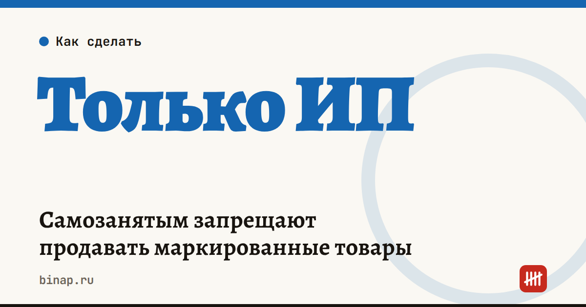

Самозанятым запрещают продавать маркированные товары

Самозанятым нельзя продавать товары, которые подлежат обязательной маркировке. С 1 октября 2026 года в маркировку вошли бытовая химия, средства гигиены и туалетные принадлежности, а с 2027 года — посуда, свечи, керамика, зеркала и другие товары для дома. Если вы делаете или продаёте такие товары на НПД, пора переходить на ИП.
Коротко
- На НПД запрещено продавать товары с обязательной маркировкой — это прямо записано в законе о самозанятых.
- С 1 октября 2026 года маркировка обязательна для хозяйственных и санитарно-гигиенических товаров и туалетных принадлежностей.
- С 1 марта 2027 года — регистрация в «Честном знаке» для посуды, свечей, керамики, зеркал, часов, светильников и других товаров для дома, с 1 апреля 2027 года — сама маркировка (по данным КонсультантПлюс).
- Выход — зарегистрировать ИП: госпошлины нет, онлайн это занимает несколько дней.
Сроки, изменения и разборы для ИП и самозанятых — каждое утро в Telegram и MAX. Подпишитесь, чтобы не пропустить.
Кого это касается
- мастеров, которые варят мыло, делают бытовую химию, средства для ухода;
- тех, кто делает своими руками свечи, керамику, посуду, предметы интерьера — для них сроки наступят в 2027 году;
- самозанятых, которые продают такие товары через маркетплейсы.
Перепродавать чужие товары самозанятым нельзя в любом случае — даже без маркировки.
Новые сроки для товаров для дома
По данным КонсультантПлюс, правительство утвердило правила маркировки ещё одной группы товаров (постановление от 21.10.2026 № 1374):
| Дата | Что происходит |
|---|---|
| 1 марта 2027 года | регистрация в «Честном знаке» |
| 1 апреля 2027 года | маркировка и передача данных о вводе в оборот |
| до 1 октября 2027 года | можно продавать немаркированные остатки, произведённые или ввезённые до 31 марта 2027 года |
В перечне — пластиковая и стеклянная посуда, столовые приборы, ножи, щётки, керамические изделия, свечи, зеркала, часы, светильники, искусственные цветы. Точный перечень кодов сверяйте в «Честном знаке».
Что сделать
- Проверьте, входит ли ваш товар в перечень обязательной маркировки: код ТН ВЭД и перечни смотрите в «Честном знаке».
- Если входит — зарегистрируйте ИП заранее, не дожидаясь даты старта. Как это сделать онлайн, — в статье как открыть ИП онлайн.
- Выберите режим до подачи заявления: для небольшого оборота обычно подходит УСН «доходы» 6%. Сколько придётся платить взносов, посчитайте в калькуляторе взносов ИП.
- Откройте расчётный счёт на ИП, подключите онлайн-кассу и зарегистрируйтесь в «Честном знаке».
Что ещё нужно знать о самозанятости — в статье как стать самозанятым.
Частые вопросы
Можно ли остаться самозанятым и продавать маркированный товар? Нет. Закон о налоге на профессиональный доход прямо запрещает продавать на НПД товары, подлежащие обязательной маркировке.
Я делаю свечи и керамику — что делать сейчас? До 2027 года можно работать как раньше, но лучше заранее зарегистрировать ИП и подготовиться к регистрации в «Честном знаке» к 1 марта 2027 года.
Можно ли совмещать ИП и самозанятость? ИП может применять НПД, но ограничения те же: маркированные товары на НПД продавать нельзя. Для них нужен другой режим — например, УСН.